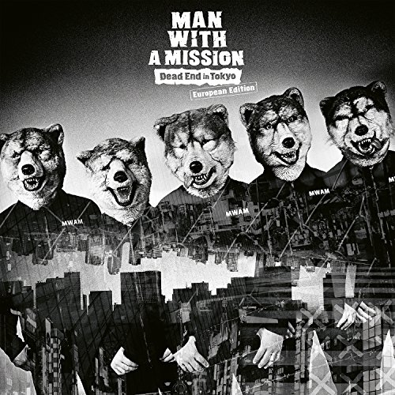

2011年6月にリリースされたメジャーデビューアルバム『MAN WITH A MISSION』に収録。インディーズ時代にリリースされたシングル「NEVER FXXKIN’ MIND THE RULES」にも収録されており、活動初期から高い人気を誇る代表曲の一つです。
また、キャッチーでノリの良いこの曲は、ライブでも定番曲となっており、2019年には「FLY AGAIN 2019」として、スーパーラグビーの『サンウルブズ2019シーズン』の公式テーマソングに起用されました。
Winding Road
2018年4月にリリースされた9枚目の両A面シングル『Take Me Under/Winding Road』に収録。テレビアニメ『ゴールデンカムイ』のオープニングテーマとして起用

まとめ
今回紹介した曲は全てSpotifyをはじめとした、音楽配信サービスで聴くことができるので、是非聞いていただきたいです。
また、MAN WITH A MISSIONの楽曲は何かしらのCM等に起用されていることが多いのでマンウィズ自体はあまり知らなくても、『あ、この曲どこかできいたことあるな』といろんな人が感じると思います。
そこがマンウィズの強みでもあると思います。